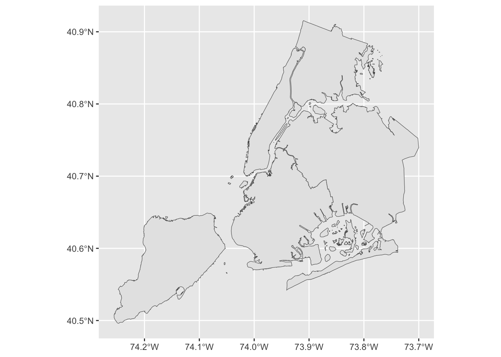
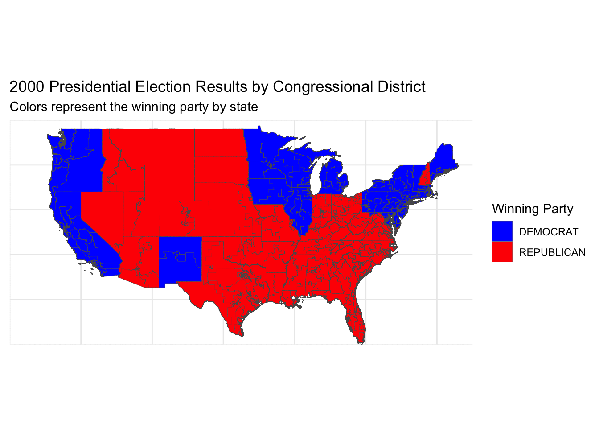

As Americans one of our constitutional rights is us being able to vote and pick our president. However, the process of the President being voted in is not that simple. There is a system called the electoral college which allots a state with a certain amount of electoral votes, in which the president nominee needs to obtain 279 of to win the election. The amount of votes a state has is based off of the amount of congressional districts they have plus two. So lets say a state has one congressional district they will only have three electoral votes. Typically, the electoral votes of a state is given to the nominee who obtained the majority of general population votes, however there are exceptions. This analysis will delve in to the 2000 election where Al Gore infamously lost the election due to the electoral college despite having the lead in the general population votes by almost half a million.
Task 1: Downloading Data and Necessary Packages
Note: The code to download the data will be a little lengthy, but follow and it should allow you to access all the data used.
#These are the packages that will be usedlibrary(tidyverse)
── Attaching core tidyverse packages ──────────────────────── tidyverse 2.0.0 ──
✔ dplyr 1.1.4 ✔ readr 2.1.5
✔ forcats 1.0.0 ✔ stringr 1.5.1
✔ ggplot2 3.5.1 ✔ tibble 3.2.1
✔ lubridate 1.9.3 ✔ tidyr 1.3.1
✔ purrr 1.0.2
── Conflicts ────────────────────────────────────────── tidyverse_conflicts() ──
✖ dplyr::filter() masks stats::filter()
✖ dplyr::lag() masks stats::lag()
ℹ Use the conflicted package (<http://conflicted.r-lib.org/>) to force all conflicts to become errors
Reading layer `districts114' from data source
`/private/var/folders/32/3sgqcjk54dd8hk8f2p5qtmmw0000gn/T/RtmpYUUaIC/districtShapes/districts114.shp'
using driver `ESRI Shapefile'
Simple feature collection with 436 features and 15 fields (with 1 geometry empty)
Geometry type: MULTIPOLYGON
Dimension: XY
Bounding box: xmin: -179.1473 ymin: 18.91383 xmax: 179.7785 ymax: 71.35256
Geodetic CRS: NAD83
census_sf <-c("https://www2.census.gov/geo/tiger/TIGER2022/CD/tl_2022_us_cd116.zip","https://www2.census.gov/geo/tiger/TIGER2021/CD/tl_2021_us_cd116.zip","https://www2.census.gov/geo/tiger/TIGER2020/CD/tl_2020_us_cd116.zip","https://www2.census.gov/geo/tiger/TIGER2019/CD/tl_2019_us_cd116.zip","https://www2.census.gov/geo/tiger/TIGER2018/CD/tl_2018_us_cd116.zip","https://www2.census.gov/geo/tiger/TIGER2017/CD/tl_2017_us_cd115.zip","https://www2.census.gov/geo/tiger/TIGER2016/CD/tl_2016_us_cd115.zip","https://www2.census.gov/geo/tiger/TIGER2015/CD/tl_2015_us_cd114.zip","https://www2.census.gov/geo/tiger/TIGER2014/CD/tl_2014_us_cd114.zip")get_census_sf <-function(URLs) {for (i in URLs) { file_name <-basename(i)if(!file.exists(file_name)) {download.file(i, file_name, mode ="wb", quiet =TRUE) } }}get_census_sf(census_sf)library(sf)# Function to download, unzip, and read shapefilesget_census_sf <-function(URLs) { shapefile_list <-list() # Initialize a list to store sf objectsfor (i in URLs) { file_name <-basename(i) dir_name <-gsub(".zip", "", file_name) # Directory name for unzipped files# Download the file if it doesn't existif(!file.exists(file_name)) {download.file(i, file_name, mode ="wb", quiet =TRUE) }# Unzip the file if the directory doesn't existif(!dir.exists(dir_name)) {unzip(file_name, exdir = dir_name) }# Assume shapefile has the same base name as the zip file shp_files <-list.files(dir_name, pattern ="\\.shp$", full.names =TRUE)# Read the shapefile if it existsif(length(shp_files) >0) { sf_object <-st_read(shp_files[1], quiet =TRUE) shapefile_list[[dir_name]] <- sf_object } }return(shapefile_list)}# URLs for the shapefilescensus_sf <-c("https://www2.census.gov/geo/tiger/TIGER2022/CD/tl_2022_us_cd116.zip","https://www2.census.gov/geo/tiger/TIGER2021/CD/tl_2021_us_cd116.zip","https://www2.census.gov/geo/tiger/TIGER2020/CD/tl_2020_us_cd116.zip","https://www2.census.gov/geo/tiger/TIGER2019/CD/tl_2019_us_cd116.zip","https://www2.census.gov/geo/tiger/TIGER2018/CD/tl_2018_us_cd116.zip","https://www2.census.gov/geo/tiger/TIGER2017/CD/tl_2017_us_cd115.zip","https://www2.census.gov/geo/tiger/TIGER2016/CD/tl_2016_us_cd115.zip","https://www2.census.gov/geo/tiger/TIGER2015/CD/tl_2015_us_cd114.zip","https://www2.census.gov/geo/tiger/TIGER2014/CD/tl_2014_us_cd114.zip")# Get shapefilesshapefiles <-get_census_sf(census_sf)
Task 3
Which states have gained and lost the most seats in the US House of Representatives between 1976 and 2022?
seats_1976 <- MIT_House_Data %>%filter(year ==1976) %>%group_by(state) %>%summarise(Seats_1976 =n_distinct(district))seats_2022 <- MIT_House_Data %>%filter(year ==2022) %>%group_by(state) %>%summarise(Seats_2022 =n_distinct(district))# Combine the data and calculate net changeseat_changes <-left_join(seats_1976, seats_2022, by ="state")seat_changes <- seat_changes %>%mutate(Net_Change = Seats_2022 - Seats_1976)# Order data for plottingseat_changes <- seat_changes %>%arrange(desc(Net_Change))# Plotting the resultsggplot(seat_changes, aes(x =reorder(state, Net_Change), y = Net_Change, fill = Net_Change >0)) +geom_col() +coord_flip() +labs(title ="Net Change in U.S. House Seats from 1976 to 2022",x ="State",y ="Net Change in Seats") +scale_fill_manual(name ="Change Type", values =c("red", "blue"), labels =c("Loss", "Gain")) +theme_minimal()
As we can see from the graph the blue represents the positive change while the red represents a loss. States such as as New York, Pennsylvania, New Jersey, Connecticut, and Illinois have all lost a substantial amount of votes. On the other hand Texas, Florida, California, Nevada, Utah, and Arizona have all gained votes. It is in interesting that many Northeast states have lost votes. Is this due to population changes within the states?
2. Are there any elections in our data where the election would have had a different outcome if the “fusion” system was not used and candidates only received the votes their received from their “major party line” (Democrat or Republican) and not their total number of votes across all lines?
election_results <- MIT_House_Data %>%group_by(year, state, district, candidate) %>%summarise(Total_Votes =sum(candidatevotes),Major_Party_Votes =sum(candidatevotes[party %in%c("DEMOCRAT", "REPUBLICAN")]),.groups ='drop')# Determine winners based on total votes and major party voteswinners_by_total <- election_results %>%group_by(year, state, district) %>%top_n(1, Total_Votes) %>%ungroup() %>%select(year, state, district, candidate, Total_Votes)winners_by_major_party <- election_results %>%group_by(year, state, district) %>%top_n(1, Major_Party_Votes) %>%ungroup() %>%select(year, state, district, candidate, Major_Party_Votes)# Combine the results to find discrepanciesdiscrepancy_analysis <- winners_by_total %>%left_join(winners_by_major_party, by =c("year", "state", "district"), suffix =c("_total", "_major")) %>%filter(candidate_total != candidate_major) %>%select(year, state, district, candidate_total, Total_Votes, candidate_major, Major_Party_Votes)# Render the results as a datatabledatatable(discrepancy_analysis, options =list(pageLength =10), caption ="Discrepancies in Election Outcomes Based on Voting Systems")
Here lies a datatable that displays the candidate totals. If you filter for New York it seems that multiple elections would have a different outcome if they accounted for all votes, not just major party votes. i support this as it allows minor parties a say.
Importing and plotting shapefile data
read_shp_from_zip <-function(zip_filename) { temp_dir <-tempdir() zip_contents <-unzip(zip_filename, exdir = temp_dir) fname_shp <- zip_contents[grepl("\\.shp$", zip_contents)]# Read the shapefile if (length(fname_shp) >0) { nyc_sf <-read_sf(fname_shp)return(nyc_sf) } else {stop("No shapefile found in the zip archive.") }}if (!file.exists("nyc_borough_boundaries.zip")) {download.file("https://data.cityofnewyork.us/api/geospatial/tqmj-j8zm?method=export&format=Shapefile", destfile="nyc_borough_boundaries.zip")}nyc_sf <-read_shp_from_zip("nyc_borough_boundaries.zip")ggplot(nyc_sf, aes(geometry=geometry)) +geom_sf()

ggplot(nyc_sf, aes(geometry=geometry, fill = shape_area)) +geom_sf()
election_map_data <-merge(cd106, election_2000, by ="state")ggplot(data = election_map_data) +geom_sf(aes(fill = party), lwd =0.1) +scale_fill_manual(values =c("DEMOCRAT"="blue", "REPUBLICAN"="red")) +labs(title ="2000 Presidential Election Results by Congressional District",subtitle ="Colors represent the winning party by state",fill ="Winning Party") +coord_sf(xlim =c(-130, -65), ylim =c(25, 50), expand =FALSE) +theme_minimal() +theme(axis.text.x =element_blank(), axis.text.y =element_blank(), axis.ticks =element_blank())

This displays a chloropleth map of the United States during the 2000 presidential election. Using the http://cdmaps.polisci.ucla.edu data I extracted the 106th congressional session which translates to the 2000 election. Red is for Republican, and Blue is democrat. It is understandable to see this and it is funny how this map rarely changes except for a few stats such as Pennsylvania.
Electoral College Vote Allocation Strategies
There are four different electoral college vote strategies
Most commonly used is the first selection State-Wide Winner-Take-All. This selection helped award the presidency to twice in two decades. First it cost Al Gore the election in 2000 when he lost the election due to the lack electoral votes that he possessed. Then 16 years later this happened again with Hilary Clinton as she lost the election to Donald Trump due to not having as many electoral college votes to secure the election. If the countrywide standard was the National Proportional then the elections would be flipped to Gore’s and Clinton’s favor. Should the State Wide Winner Takes All system should be abolished and replaced with a National Proportional system? It is a reoccurring discussion, do you favor the interests of the majority or do you take away the voting power of smaller states and give it to the larger states with a larger population.